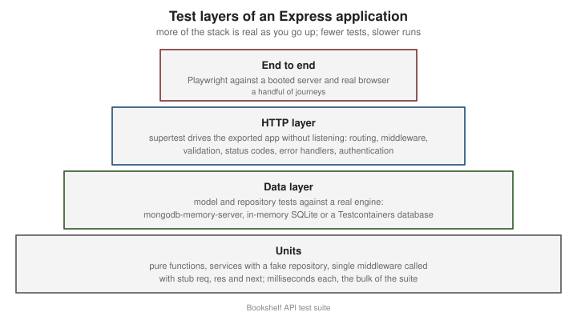

Testing
|
This content was generated with the assistance of AI and should be verified against the official documentation before being relied on in production. |
This page is written against Express 5.3 (npm express 5.3.0, published 2026-10-09) on Node.js 18 or later, the minimum
for Express 5, and it states where Express 4 (latest 4.22.3) behaves differently. Everything was checked against the
official documentation and the package repositories on 2026-10-29. An Express application is easy to test because it is
only a function: app is a request listener with the signature (req, res), so a test can hand it a request without
opening a port by hand and without a browser. The page builds a test suite for the Bookshelf API that grows across this
section: first the structure that makes the application testable, then HTTP-level tests with supertest on three test
runners, isolated tests of middleware and error handlers, strategies for the database, authentication in tests, contract
tests and end-to-end tests with Playwright. The examples use ESM and the node: prefix for built-in modules, and
contain placeholders only, never real secrets. The runtime-level test runner is described in
Node.js Test Runner; the NestJS equivalents are in
NestJS Testing.

Making the application testable: export app, do not listen
The most common obstacle to testing an Express application is a module that creates the app and calls app.listen() in
the same file. Importing it from a test starts a server on a fixed port: a second test file collides with
EADDRINUSE, the process never exits because the server keeps the event loop alive, and the test depends on whatever
else is on that port. The cure is to separate three responsibilities:
-
A factory (or a module-level
app) that builds the application and exports it, with no side effect on import. -
A server module that imports the app, connects the real dependencies, and listens.
-
Tests that import the factory and give it fake or test dependencies.
A factory is better than a bare exported app, because it lets each test build a fresh application with its own
repository, clock or authentication, and avoids shared state between test files. The dependencies are passed in rather
than imported inside the routes (plain constructor injection, no container needed).
// src/app.mjs
import express from 'express';
import createError from 'http-errors';
/**
* Builds the Bookshelf application. It never listens and never connects to anything;
* everything with a side effect arrives through `deps`.
*/
export function createApp({ books, authenticate = (req, res, next) => next() }) {
const app = express();
app.disable('x-powered-by');
app.use(express.json({ limit: '100kb' }));
// Readiness probe, used by the Playwright webServer option below.
app.get('/readyz', (req, res) => {
res.json({ status: 'ready' });
});
const api = express.Router();
api.get('/books', async (req, res) => {
res.json(await books.list({ author: req.query.author }));
});
api.get('/books/:id', async (req, res) => {
const book = await books.findById(req.params.id);
if (!book) {
throw createError(404, `No book with id ${req.params.id}`);
}
res.json(book);
});
api.post('/books', authenticate, async (req, res) => {
const title = typeof req.body?.title === 'string' ? req.body.title.trim() : '';
if (!title) {
throw createError(422, 'title is required');
}
const book = await books.create({ title, author: req.body.author ?? null });
res.status(201).location(`/api/v1/books/${book.id}`).json(book);
});
app.use('/api/v1', api);
app.use((req, res, next) => next(createError(404, `No resource at ${req.method} ${req.path}`)));
app.use((err, req, res, next) => {
if (res.headersSent) {
return next(err);
}
const status = Number.isInteger(err.status) && err.status >= 400 && err.status < 600 ? err.status : 500;
res.status(status).json({ status, message: status < 500 ? err.message : 'Internal Server Error' });
});
return app;
}Source: Express: Routing
// src/server.mjs
import { createApp } from './app.mjs';
import { createMemoryBookRepository } from './memory-book-repository.mjs';
const app = createApp({ books: createMemoryBookRepository() });
const server = app.listen(Number(process.env.PORT ?? 3000), (error) => {
if (error) {
throw error;
}
});
process.on('SIGTERM', () => server.close());Source: Express: Hello world
A small in-memory repository doubles as the fake used by most tests and as a development stand-in:
// src/memory-book-repository.mjs
import { randomUUID } from 'node:crypto';
export function createMemoryBookRepository(seed = []) {
const store = new Map(seed.map((book) => [book.id, book]));
return {
async list({ author } = {}) {
const all = [...store.values()];
return author ? all.filter((book) => book.author === author) : all;
},
async findById(id) {
return store.get(id) ?? null;
},
async create({ title, author }) {
const book = { id: randomUUID(), title, author };
store.set(book.id, book);
return book;
},
};
}Source: Express: Routing
Three details of this structure matter for tests. The factory makes no network or file-system call at import time, so
importing it is free. The app never calls process.exit() or reads configuration at module load; anything
environment-dependent is a parameter. And the database connection, the thing that normally blocks a test, lives in the
server module or in a test fixture, never in createApp. The same separation is recommended for project layout in
Project Structure & Configuration. The pattern is not
specific to Express 5; it works unchanged on Express 4.
HTTP-level tests with supertest
supertest (npm supertest, 7.x at the time of writing) wraps a superagent
client around a Node.js HTTP handler. When you pass it an Express app (a function) rather than a URL, it creates an
HTTP server for that app, makes it listen on an ephemeral port (port 0, chosen by the operating system), sends the
request, and closes the server when the request finishes. No fixed port is involved, so test files can run in parallel,
and nothing stays open afterwards.
The API is a fluent chain: request(app).get('/path').set('Header', 'value').send(body).expect(status). Calling
.expect(200), .expect('Content-Type', /json/) or .expect(function) registers an assertion, and the returned object
is thenable, so await works and the assertion failure becomes a rejected promise. The response is returned with
response.status, response.headers, response.body (parsed JSON) and response.text.
Install it as a development dependency with npm install --save-dev supertest. TypeScript users add
@types/supertest. The package does not depend on a test runner, so the same chain works with any of the three runners
below. Two rules apply to all of them: always await (or return) the request, or the test passes before the assertion
runs; and do not call server.listen() yourself and then give supertest a http.Server unless you also close it.
supertest with node:test
The built-in runner (node:test, stable since Node.js 20) needs no dependency beyond supertest and is the lightest
choice for an API. Run it with node --test; it discovers files named *.test.mjs or under a test directory.
// test/books.node.test.mjs
import assert from 'node:assert/strict';
import { beforeEach, describe, it } from 'node:test';
import request from 'supertest';
import { createApp } from '../src/app.mjs';
import { createMemoryBookRepository } from '../src/memory-book-repository.mjs';
describe('GET and POST /api/v1/books', () => {
let app;
// A fresh application and repository per test: no state leaks between tests.
beforeEach(() => {
const books = createMemoryBookRepository([{ id: '1', title: 'Dune', author: 'Frank Herbert' }]);
app = createApp({ books });
});
it('lists the books', async () => {
const response = await request(app).get('/api/v1/books').expect(200).expect('Content-Type', /json/);
assert.deepEqual(response.body, [{ id: '1', title: 'Dune', author: 'Frank Herbert' }]);
});
it('filters by author', async () => {
const response = await request(app).get('/api/v1/books').query({ author: 'Nobody' }).expect(200);
assert.deepEqual(response.body, []);
});
it('creates a book and returns its location', async () => {
const response = await request(app)
.post('/api/v1/books')
.send({ title: ' Emma ', author: 'Jane Austen' })
.expect(201);
assert.equal(response.body.title, 'Emma');
assert.match(response.headers.location, /^\/api\/v1\/books\/.+/);
});
it('rejects a missing title with 422', async () => {
const response = await request(app).post('/api/v1/books').send({}).expect(422);
assert.equal(response.body.message, 'title is required');
});
it('answers 404 as JSON for unknown routes', async () => {
const response = await request(app).get('/nope').expect(404);
assert.equal(response.body.status, 404);
});
it('answers 400 for malformed JSON', async () => {
await request(app)
.post('/api/v1/books')
.set('Content-Type', 'application/json')
.send('{"title":')
.expect(400);
});
});Source: Node.js: Test runner
node:test also provides what teams used to import Sinon or Mocha for. mock.fn() and t.mock.method() create spies
and stubs and restore them when the test ends; mock.timers.enable() replaces setTimeout and Date so that a rate
limiter or a token expiry can be tested without waiting; describe, it and the lifecycle hooks (before, after,
beforeEach, afterEach) cover Mocha’s BDD interface; and --experimental-test-coverage prints coverage. mock.module()
for ES module mocking is still experimental and needs a flag, which is another reason to prefer the injection shown above.
Run node --test --test-reporter=spec for a readable report, --test-name-pattern to run a subset and --watch during
development.
supertest with Jest
Jest has the most familiar matcher API (expect(...).toEqual(...), toMatchObject, jest.fn()).
For an ESM project it needs a switch, because Jest’s ESM support is still experimental: run it with
NODE_OPTIONS=--experimental-vm-modules npx jest and keep "type": "module" in package.json. A project written in
CommonJS (or transformed by Babel or ts-jest) needs no flag. Import jest from @jest/globals in ESM, because the
jest object is not a global there.
// test/books.jest.test.mjs
import { beforeEach, describe, expect, it, jest } from '@jest/globals';
import request from 'supertest';
import { createApp } from '../src/app.mjs';
describe('Bookshelf API (Jest)', () => {
let books;
let app;
beforeEach(() => {
books = {
list: jest.fn().mockResolvedValue([{ id: '1', title: 'Dune', author: 'Frank Herbert' }]),
findById: jest.fn().mockResolvedValue(null),
create: jest.fn().mockImplementation(async (data) => ({ id: '2', ...data })),
};
app = createApp({ books });
});
it('delegates the author filter to the repository', async () => {
await request(app).get('/api/v1/books').query({ author: 'Frank Herbert' }).expect(200);
expect(books.list).toHaveBeenCalledWith({ author: 'Frank Herbert' });
});
it('answers 404 when the book does not exist', async () => {
const response = await request(app).get('/api/v1/books/99');
expect(response.status).toBe(404);
expect(response.body).toMatchObject({ status: 404 });
});
it('turns a repository failure into a generic 500', async () => {
books.list.mockRejectedValueOnce(new Error('connection refused to db-host:5432'));
const response = await request(app).get('/api/v1/books');
expect(response.status).toBe(500);
expect(response.body.message).toBe('Internal Server Error'); // the internal message is not leaked
});
});Source: Jest: ECMAScript Modules
The last test is a useful habit: because Express 5 forwards the rejected promise of an async handler to the error
handler, a failing dependency can be simulated with mockRejectedValueOnce and the test verifies both the status code and
that nothing internal reaches the client. Jest runs test files in separate worker processes, with module registries
isolated per file, so a module-level app is not shared between files. Its default testEnvironment is node, which is
right for an API (the jsdom environment has no place in a back-end suite). If the process does not exit, run with
--detectOpenHandles to find a leftover server, timer or database connection.
supertest with Vitest
Vitest uses the Vite pipeline, so ESM and TypeScript work without configuration, and its API is
compatible with Jest’s for almost every API test. The vi object replaces jest, and vi.fn(), vi.spyOn(),
vi.useFakeTimers() and vi.mock() behave as the Jest equivalents. Tests run in worker threads or forked processes
(pool option) and files run in parallel by default.
// test/books.vitest.test.mjs
import request from 'supertest';
import { afterEach, beforeEach, describe, expect, it, vi } from 'vitest';
import { createApp } from '../src/app.mjs';
import { createMemoryBookRepository } from '../src/memory-book-repository.mjs';
describe('Bookshelf API (Vitest)', () => {
let app;
let books;
beforeEach(() => {
books = createMemoryBookRepository();
app = createApp({ books });
});
afterEach(() => {
vi.restoreAllMocks();
});
it('creates a book through the repository', async () => {
const create = vi.spyOn(books, 'create');
const response = await request(app).post('/api/v1/books').send({ title: 'Emma' }).expect(201);
expect(create).toHaveBeenCalledOnce();
expect(response.body).toMatchObject({ title: 'Emma', author: null });
});
it('keeps the Location header consistent with the id', async () => {
const response = await request(app).post('/api/v1/books').send({ title: 'Emma' });
expect(response.headers.location).toBe(`/api/v1/books/${response.body.id}`);
});
it('snapshots the validation problem', async () => {
const response = await request(app).post('/api/v1/books').send({ title: 42 });
expect(response.status).toBe(422);
expect(response.body).toMatchInlineSnapshot(`
{
"message": "title is required",
"status": 422,
}
`);
});
});Source: Vitest: Getting started
Configure it in vitest.config.mjs with test: { environment: 'node' }; vitest run executes once and vitest alone
watches. Coverage comes from --coverage with the v8 provider (the @vitest/coverage-v8 package). One difference is
worth stating: Vitest transforms modules through Vite, so a test can behave differently from production for code that
relies on import.meta or native addons. For the HTTP layer, where the code is plain Node.js, the difference is
negligible.
Choosing a runner
| Aspect | node:test |
Jest | Vitest |
|---|---|---|---|
Dependencies |
None (built in); only |
|
|
ESM |
Native. |
Experimental flag ( |
Native. |
Mocking |
|
|
|
Watch mode and UI |
|
|
Fast watch mode and an optional UI. |
Typical fit |
Small to medium APIs, minimal dependencies. |
Projects already on Jest, or sharing a suite with a React front end. |
TypeScript projects, or a shared Vite toolchain. |
The choice has no effect on how the application is built. Only the assertions and mock helpers change, so the factory and the dependency-injection style above carry over without edits. Mixing runners in the same package is possible but invites confusion about which command runs what.
Testing middleware and error handlers in isolation
A full HTTP test is the right default, but some logic is easier to pin down without a router: a middleware with many branches, or an error handler that maps a long list of library errors. There are two ways, depending on how much of Express you want in the loop.
The first is to call the function directly with stub objects. A middleware is just (req, res, next), so a test passes
a plain object for req, a recorder for res, and a spy for next:
// test/require-json.node.test.mjs
import assert from 'node:assert/strict';
import { describe, it, mock } from 'node:test';
// The unit under test: rejects non-JSON bodies on write methods.
function requireJson(req, res, next) {
if (['POST', 'PUT', 'PATCH'].includes(req.method) && !req.is('application/json')) {
return res.status(415).json({ message: 'Content-Type must be application/json' });
}
next();
}
function createResponse() {
const res = {};
res.status = mock.fn((code) => {
res.statusCode = code;
return res;
});
res.json = mock.fn((body) => {
res.body = body;
return res;
});
return res;
}
describe('requireJson', () => {
it('lets JSON requests through', () => {
const next = mock.fn();
const req = { method: 'POST', is: (type) => type === 'application/json' };
requireJson(req, createResponse(), next);
assert.equal(next.mock.callCount(), 1);
});
it('rejects other content types with 415', () => {
const next = mock.fn();
const res = createResponse();
requireJson({ method: 'POST', is: () => false }, res, next);
assert.equal(res.statusCode, 415);
assert.equal(next.mock.callCount(), 0);
});
});Source: Node.js: Test runner, mocking
Stubs keep the test fast and focused, but they reproduce only the parts of req and res you remember to fake. For an
error handler, or anything that touches real res behaviour (res.format(), res.type(), res.set(), content
negotiation), the better approach is the second one: mount the function on a minimal application that exists only for the
test, and drive it with supertest. That runs the real res and the real router while still excluding the rest of the
Bookshelf routes.
// test/error-layer.node.test.mjs
import assert from 'node:assert/strict';
import { describe, it } from 'node:test';
import express from 'express';
import createError from 'http-errors';
import request from 'supertest';
import { installErrorLayer } from '../src/error-layer.mjs';
// A tiny application with routes that fail in every way the layer must handle.
function buildApp() {
const app = express();
app.get('/http-error', () => {
throw createError(409, 'Duplicate title');
});
app.get('/rejects', async () => {
throw new Error('database password is hunter2'); // must never reach the client
});
app.get('/non-error', () => {
throw 'a string was thrown'; // eslint-disable-line no-throw-literal
});
installErrorLayer(app, { logger: { error() {} }, isProduction: true });
return app;
}
describe('error layer', () => {
it('renders http-errors as problem details', async () => {
const response = await request(buildApp()).get('/http-error').expect(409);
assert.match(response.headers['content-type'], /application\/problem\+json/);
assert.equal(response.body.detail, 'Duplicate title');
});
it('hides the message of a 5xx error', async () => {
const response = await request(buildApp()).get('/rejects').expect(500);
assert.equal(response.body.detail, undefined);
assert.ok(!JSON.stringify(response.body).includes('hunter2'));
});
it('survives a thrown string', async () => {
await request(buildApp()).get('/non-error').expect(500);
});
it('does not stack-trace in production', async () => {
const response = await request(buildApp()).get('/rejects');
assert.equal(response.body.stack, undefined);
});
it('answers 404 as problem details for unknown paths', async () => {
const response = await request(buildApp()).get('/missing').expect(404);
assert.equal(response.body.status, 404);
});
});Source: Express: Error handling
The module under test is the Bookshelf error layer built in Error Handling.
A response that has already started cannot be asserted through a status code: the handler delegates to finalhandler,
which destroys the connection, so a test of that case asserts that the request is rejected. The same pattern covers any
router: app.use('/api', router) on a throwaway app tests a router without the rest of the application, and a test of a
middleware that reads req.user can put a one-line layer before it that sets req.user.
Two points about asynchronous behaviour deserve attention. A test of an async handler on Express 5 must await the
request, because the rejection is forwarded by the router rather than thrown at the test. And on Express 4 a rejected
promise in a handler is not forwarded, so the same test hangs until the timeout; that is the symptom to look for when a
suite written for 5 is run against 4 (see Migrating & What Changed).
Mocking authentication
Protected routes need an authenticated caller in tests, and there are three levels of realism. Which to use depends on what is being verified.
| Approach | How | Use it when |
|---|---|---|
Inject a fake authenticator |
|
Testing route logic that depends on the user (ownership, roles). Fastest and least brittle. |
Sign a real token with a test key |
The test creates a JWT with a test-only secret or key pair, and the application is configured with the matching
verification key. |
Testing the verification middleware itself: expired tokens, wrong audience, wrong algorithm, missing header. |
Use a real session |
|
Testing session-based flows and CSRF handling end to end. |
Faking at the authenticate seam is possible only because the factory takes it as a parameter. The alternative,
patching the module that verifies tokens, ties the test to implementation details. A test for the protected route:
// test/auth.node.test.mjs
import assert from 'node:assert/strict';
import { createHmac } from 'node:crypto';
import { describe, it } from 'node:test';
import request from 'supertest';
import { createApp } from '../src/app.mjs';
import { createMemoryBookRepository } from '../src/memory-book-repository.mjs';
const TEST_SECRET = 'test-only-secret-not-used-anywhere-else';
// 1. Fake authenticator: the route sees whatever user the test chooses.
const asUser = (user) => (req, res, next) => {
req.user = user;
next();
};
const anonymous = (req, res) => res.status(401).json({ message: 'Authentication required' });
// 2. A minimal HS256 token signer for the test key (no dependency needed for a test double).
function signToken(payload, secret = TEST_SECRET) {
const encode = (value) => Buffer.from(JSON.stringify(value)).toString('base64url');
const body = `${encode({ alg: 'HS256', typ: 'JWT' })}.${encode(payload)}`;
return `${body}.${createHmac('sha256', secret).update(body).digest('base64url')}`;
}
describe('POST /api/v1/books requires authentication', () => {
it('returns 401 when nobody is logged in', async () => {
const app = createApp({ books: createMemoryBookRepository(), authenticate: anonymous });
await request(app).post('/api/v1/books').send({ title: 'Emma' }).expect(401);
});
it('accepts an authenticated user', async () => {
const app = createApp({ books: createMemoryBookRepository(), authenticate: asUser({ id: 'u1', role: 'editor' }) });
await request(app).post('/api/v1/books').send({ title: 'Emma' }).expect(201);
});
it('produces a token the verifier can check', () => {
const token = signToken({ sub: 'u1', exp: Math.floor(Date.now() / 1000) + 60 });
assert.equal(token.split('.').length, 3);
});
});Source: supertest: README
The hand-made signer is only a test double. In the application, use a maintained library (such as jose or
jsonwebtoken) to verify tokens, with an algorithm allow-list, as described in
Authentication & Authorization. Test secrets are constants
in the test file or come from a test-only environment file, and never from the production configuration. For
request.agent(app), create the agent once per scenario: const agent = request.agent(app); await agent.post('/login').send(...);
later calls on the same agent send the session cookie.
Database strategies
HTTP tests with an in-memory repository verify routing and validation but not the queries. For the data layer the options trade realism against speed and setup cost:
| Strategy | Realism | Cost | Typical use |
|---|---|---|---|
Fake repository (as above) |
Behaviour you wrote yourself; no real query engine. |
None. |
HTTP tests; every route. |
In-memory SQLite ( |
A real SQL engine, but not the one used in production. |
Almost none. |
Relational code that avoids vendor-specific SQL. |
|
A real |
A binary download on first run, then a few hundred milliseconds per start. |
Mongoose models, queries, indexes, validators. |
Testcontainers |
The exact database image and version used in production. |
Docker required; a few seconds per container start. |
PostgreSQL, MySQL, MongoDB features that differ per engine; migrations; CI. |
A shared test database |
Real, but shared state. |
Needs cleanup discipline and prevents parallel runs. |
Rarely a good idea; prefer an isolated instance per run. |
Whatever the strategy, the principles are the same. Each test starts from a known state (a transaction that is rolled back,
a truncated collection, or a fresh database). The connection is opened once per file, in a before hook, and closed in
after; leaving it open is the classic reason a test process never exits. And the suite never points at a real
production database: the connection string comes from the fixture, not from the environment that the application reads.
Model tests
A model test checks the schema in isolation: validators, defaults, virtuals, indexes and instance methods. Mongoose validation
that does not need a database round trip (doc.validate()) can run without a server at all, and is the cheapest test in the suite.
// src/book-model.mjs
import mongoose from 'mongoose';
const bookSchema = new mongoose.Schema(
{
title: { type: String, required: [true, 'title is required'], trim: true, maxlength: 200 },
author: { type: String, trim: true, default: null },
isbn: { type: String, match: [/^\d{13}$/, 'isbn must have 13 digits'], unique: true, sparse: true },
rating: { type: Number, min: 0, max: 5, default: 0 },
},
{ timestamps: true },
);
export const Book = mongoose.models.Book ?? mongoose.model('Book', bookSchema);Source: Mongoose: Validation
// test/book-model.node.test.mjs
import assert from 'node:assert/strict';
import { describe, it } from 'node:test';
import { Book } from '../src/book-model.mjs';
describe('Book schema validation (no database)', () => {
it('requires a title', async () => {
const error = new Book({}).validateSync();
assert.equal(error.errors.title.message, 'title is required');
});
it('trims the title and applies defaults', () => {
const book = new Book({ title: ' Dune ' });
assert.equal(book.title, 'Dune');
assert.equal(book.rating, 0);
assert.equal(book.author, null);
});
it('rejects a malformed isbn', async () => {
await assert.rejects(new Book({ title: 'Dune', isbn: '123' }).validate(), /isbn must have 13 digits/);
});
it('rejects a rating above 5', () => {
const error = new Book({ title: 'Dune', rating: 6 }).validateSync();
assert.ok(error.errors.rating);
});
});Source: Mongoose: Validation
Unique indexes, queries, transactions and aggregation need a real server. Mongoose builds indexes asynchronously, so a
test of a unique constraint must wait for Model.init() (or syncIndexes()) before inserting; otherwise the duplicate
may be accepted because the index does not exist yet, and the test is flaky.
mongodb-memory-server
mongodb-memory-server (npm package of the typegoose organisation) downloads a MongoDB binary the first time it runs,
caches it under node_modules/.cache/mongodb-memory-server, and starts an actual mongod on a random port with data in
memory. MongoMemoryServer.create() starts a standalone instance; MongoMemoryReplSet.create({ replSet: { count: 1 } })
starts a single-node replica set, which MongoDB requires for multi-document transactions and change streams. The
getUri() method returns the connection string to hand to mongoose.connect().
// test/book-repository.node.test.mjs
import assert from 'node:assert/strict';
import { after, afterEach, before, describe, it } from 'node:test';
import { MongoMemoryServer } from 'mongodb-memory-server';
import mongoose from 'mongoose';
import request from 'supertest';
import { createApp } from '../src/app.mjs';
import { Book } from '../src/book-model.mjs';
// Repository implementation backed by Mongoose, with the same contract as the in-memory one.
function createMongoBookRepository() {
return {
list: ({ author } = {}) => Book.find(author ? { author } : {}).lean().then((docs) => docs.map(toJson)),
findById: async (id) => (mongoose.isValidObjectId(id) ? toJson(await Book.findById(id).lean()) : null),
create: async (data) => toJson((await Book.create(data)).toObject()),
};
}
const toJson = (doc) => (doc ? { id: String(doc._id), title: doc.title, author: doc.author } : null);
describe('Bookshelf API with a real MongoDB (memory server)', () => {
let mongod;
let app;
before(async () => {
mongod = await MongoMemoryServer.create();
await mongoose.connect(mongod.getUri(), { dbName: 'bookshelf-test' });
await Book.init(); // wait for the indexes
app = createApp({ books: createMongoBookRepository() });
});
afterEach(async () => {
await Book.deleteMany({}); // known state for the next test
});
after(async () => {
await mongoose.disconnect();
await mongod.stop();
});
it('persists a created book and reads it back', async () => {
const created = await request(app).post('/api/v1/books').send({ title: 'Dune', author: 'Frank Herbert' }).expect(201);
const fetched = await request(app).get(`/api/v1/books/${created.body.id}`).expect(200);
assert.equal(fetched.body.title, 'Dune');
});
it('enforces the unique isbn index', async () => {
await Book.create({ title: 'A', isbn: '9780441013593' });
await assert.rejects(Book.create({ title: 'B', isbn: '9780441013593' }), { code: 11000 });
});
it('returns 404 for an id that is not an ObjectId', async () => {
await request(app).get('/api/v1/books/not-an-id').expect(404);
});
});Operational points that cause most of the trouble:
-
The first run needs network access and several hundred megabytes of disk for the binary. In CI, cache the directory, or set
MONGOMS_DOWNLOAD_DIRandMONGOMS_VERSION(through theMONGOMS_*environment variables) so that the version is pinned and reproducible. Pin the same major version as the production database. -
Operating system support for the downloaded binary lags behind new distributions. When a platform has no matching binary, point
MONGOMS_SYSTEM_BINARYat a locally installedmongod, or use Testcontainers instead. -
One server per test file is usually enough; use a distinct
dbNameper file when files run in parallel, or one server per worker process. -
Always call
stop(). A forgotten server leaves amongodprocess alive and the test run hangs or leaks processes. -
Not every behaviour of a managed service is present (Atlas Search, some auth modes), and the memory server has no authentication by default.
Testcontainers
Testcontainers for Node.js (testcontainers, plus modules such as @testcontainers/mongodb and
@testcontainers/postgresql) starts a real database in a throwaway Docker container, waits until it is ready, and removes
it when the test finishes (a helper container, Ryuk, deletes the containers even if the test process crashes). It needs a
container runtime (Docker, Podman or a compatible one) on the machine and in CI. Use it when the exact engine and version
matter: PostgreSQL features and extensions, migrations, collations, MongoDB replica-set behaviour, or anything a
lightweight fake would not catch.
// test/postgres.node.test.mjs
import assert from 'node:assert/strict';
import { after, before, describe, it } from 'node:test';
import { PostgreSqlContainer } from '@testcontainers/postgresql';
import pg from 'pg';
describe('PostgreSQL repository (Testcontainers)', { timeout: 120_000 }, () => {
let container;
let pool;
before(async () => {
// The image tag pins the production major version. The credentials are generated for the container.
container = await new PostgreSqlContainer('postgres:17-alpine').start();
pool = new pg.Pool({ connectionString: container.getConnectionUri() });
await pool.query(`
CREATE TABLE books (
id SERIAL PRIMARY KEY,
title TEXT NOT NULL,
isbn TEXT UNIQUE
)`);
});
after(async () => {
await pool?.end();
await container?.stop();
});
it('rejects a duplicate isbn with SQLSTATE 23505', async () => {
await pool.query('INSERT INTO books (title, isbn) VALUES ($1, $2)', ['A', '9780441013593']);
await assert.rejects(pool.query('INSERT INTO books (title, isbn) VALUES ($1, $2)', ['B', '9780441013593']), {
code: '23505',
});
});
});For MongoDB, @testcontainers/mongodb offers MongoDBContainer, which starts a single-node replica set, so transactions
work; with the generic GenericContainer the same pattern applies to Redis, RabbitMQ or Kafka. Container tests are slower,
so keep them to the data layer and to a few integration scenarios, and run the quick HTTP tests with the fake repository.
Reuse one container per test file (not per test), set a generous timeout for the first image pull, and in CI start the
Docker service before the job. Database details for the application itself are in
Database Integration and
MongoDB & Mongoose.
In-memory SQLite
For relational code that stays within standard SQL, SQLite in memory is the fastest realistic option and needs no
container. Node.js ships the built-in node:sqlite module (added in Node.js 22.5 behind a flag, available without the flag since
22.13, and still marked experimental in the Node.js documentation; check the status on the version you target), and
better-sqlite3 is the long-standing alternative. A fresh :memory: database per test
gives perfect isolation:
// test/sqlite.node.test.mjs
import assert from 'node:assert/strict';
import { DatabaseSync } from 'node:sqlite';
import { beforeEach, describe, it } from 'node:test';
describe('book queries on in-memory SQLite', () => {
let db;
beforeEach(() => {
db = new DatabaseSync(':memory:');
db.exec('CREATE TABLE books (id INTEGER PRIMARY KEY, title TEXT NOT NULL, author TEXT)');
db.prepare('INSERT INTO books (title, author) VALUES (?, ?)').run('Dune', 'Frank Herbert');
});
it('finds books by author', () => {
const rows = db.prepare('SELECT title FROM books WHERE author = ?').all('Frank Herbert');
assert.deepEqual(rows.map((row) => row.title), ['Dune']);
});
it('enforces NOT NULL', () => {
assert.throws(() => db.prepare('INSERT INTO books (title) VALUES (NULL)').run(), /NOT NULL/);
});
});Source: Node.js: SQLite
The risk is the dialect gap: SQLite types, RETURNING, JSON operators, locking and constraint behaviour differ from
PostgreSQL or MySQL, so a green SQLite suite can hide a production failure. Use it when production is also SQLite or the
SQL is portable; otherwise prefer Testcontainers for the queries that matter.
Contract tests against the OpenAPI document
When the API has an OpenAPI description, a test can verify that real responses conform to it, which keeps code and
documentation from drifting. Two complementary approaches exist. At runtime, express-openapi-validator mounted in the
application validates requests and, optionally, responses against the document; in tests you enable response validation
(validateResponses: true) and any non-conforming response fails the request with a descriptive error. At test time, a
matcher library checks a supertest response against the document without involving the application (for example
jest-openapi for Jest-style expect, or validating the body with Ajv against the schema extracted from the document).
// test/contract.node.test.mjs
import assert from 'node:assert/strict';
import { describe, it } from 'node:test';
import * as OpenApiValidator from 'express-openapi-validator';
import express from 'express';
import request from 'supertest';
function buildApp() {
const app = express();
app.use(express.json());
app.use(
OpenApiValidator.middleware({
apiSpec: new URL('../openapi.yaml', import.meta.url).pathname,
validateRequests: true,
validateResponses: true, // a response that breaks the contract becomes a 500 in tests
}),
);
app.get('/api/v1/books', (req, res) => res.json([{ id: '1', title: 'Dune' }]));
app.use((err, req, res, next) => {
res.status(err.status ?? 500).json({ message: err.message, errors: err.errors });
});
return app;
}
describe('contract', () => {
it('the list endpoint matches the OpenAPI schema', async () => {
const response = await request(buildApp()).get('/api/v1/books').expect(200);
assert.ok(Array.isArray(response.body));
});
it('rejects an unknown query parameter as the document says', async () => {
await request(buildApp()).get('/api/v1/books?bogus=1').expect(400);
});
});Source: express-openapi-validator
Enable response validation in the test configuration only: in production it costs time on every response and a mismatch
should be a bug report, not an outage. The validator reads the document when the middleware is created, so build the app in a
helper rather than at module level. Pact and similar consumer-driven tools solve a related problem, where the front end
or another service states what it needs from the API; the HTTP side is still a supertest call against the exported app.
End-to-end tests with Playwright
Everything above runs in one Node.js process and speaks HTTP directly. An end-to-end (E2E) test runs the application as
it will run for users: a booted server and a real browser. Playwright (@playwright/test) is the current standard; it
drives Chromium, Firefox and WebKit, waits for elements automatically, and its test runner can start your server before
the suite. The details of Playwright itself are documented in the
Playwright getting started guide and the pages next to it; this
section covers what is specific to Express.
The webServer option in playwright.config.mjs boots the application, waits until a URL answers, and stops it at the
end. Point it at the server module, not at the factory, and use a dedicated port and test data.
// playwright.config.mjs
import { defineConfig, devices } from '@playwright/test';
const PORT = 3100;
export default defineConfig({
testDir: './e2e',
fullyParallel: true,
forbidOnly: Boolean(process.env.CI),
retries: process.env.CI ? 2 : 0,
reporter: process.env.CI ? 'github' : 'list',
use: {
baseURL: `http://127.0.0.1:${PORT}`,
trace: 'on-first-retry',
},
projects: [{ name: 'chromium', use: { ...devices['Desktop Chrome'] } }],
webServer: {
command: 'node --env-file=.env.test src/server.mjs',
url: `http://127.0.0.1:${PORT}/readyz`,
reuseExistingServer: !process.env.CI,
env: { PORT: String(PORT), NODE_ENV: 'test' },
timeout: 30_000,
},
});Source: Playwright: Web server
reuseExistingServer lets a developer keep a server running while iterating, and forces a clean start in CI. The url
probe needs an endpoint that answers when the application is ready, which is why createApp has a /readyz route; a
full readiness check is in
Health Checks & Graceful Shutdown. --env-file loads a
test-only environment file (Node.js 20.6 and later), and the file holds placeholders such as a local test database
URL, never production values. Tests can then use the browser for user journeys, and
Playwright’s request fixture for API-level checks and for seeding data without clicking through the UI:
// e2e/books.spec.mjs
import { expect, test } from '@playwright/test';
test.describe('Bookshelf', () => {
test('the API creates and lists a book', async ({ request }) => {
const created = await request.post('/api/v1/books', { data: { title: 'Dune', author: 'Frank Herbert' } });
expect(created.status()).toBe(201);
const list = await request.get('/api/v1/books');
expect(await list.json()).toEqual(expect.arrayContaining([expect.objectContaining({ title: 'Dune' })]));
});
test('the catalogue page shows a book added through the API', async ({ page, request }) => {
await request.post('/api/v1/books', { data: { title: 'Emma' } });
await page.goto('/');
await expect(page.getByRole('heading', { name: 'Bookshelf' })).toBeVisible();
await expect(page.getByRole('listitem').filter({ hasText: 'Emma' })).toBeVisible();
});
test('unknown pages answer with a JSON 404', async ({ request }) => {
const response = await request.get('/definitely-missing');
expect(response.status()).toBe(404);
expect(response.headers()['content-type']).toContain('json');
});
});Source: Playwright: API testing
Guidelines specific to an Express back end:
-
Keep E2E tests few and about user journeys (log in, create, see the result). Everything that can be verified through
supertestis faster and less flaky there. -
The server under test is a separate process, so you cannot inject fakes into it. Choose its collaborators through configuration: a test database URL, a fake payment gateway at a local address, or a seed script run before the suite (
globalSetup). -
Tests that share a server share its data. Create unique records per test (a random suffix in titles), or reset the database through a test-only endpoint that is mounted only when
NODE_ENVistest. -
An application that sets secure cookies or
trust proxybehaves differently over plainhttp://127.0.0.1: run E2E with the same settings as production where practical, or document the difference. Authentication in the browser is easiest by logging in once in a setup project and reusing the saved storage state, as explained in Playwright Authentication & Isolation. -
Run in CI with the browsers installed (
npx playwright install --with-deps) and keep traces and reports as build artifacts. For flakiness and parallelism, see Flaky Tests and Reliability.
Running the suite
A package.json that wires the pieces together keeps the commands uniform for developers and CI:
{
"type": "module",
"scripts": {
"start": "node src/server.mjs",
"test": "node --test test/",
"test:coverage": "node --test --experimental-test-coverage test/",
"test:e2e": "playwright test"
},
"devDependencies": {
"@playwright/test": "^1.0.0",
"supertest": "^7.0.0",
"mongodb-memory-server": "^10.0.0"
},
"dependencies": {
"express": "^5.3.0"
}
}Source: npm: scripts
The version ranges in the example are placeholders to show the structure; install the packages with npm install so
that npm records the current versions. Two practical habits improve a suite more than the choice of runner: run the tests
in a clean environment (NODE_ENV=test, which also stops Express from printing stack traces and enables nothing that
needs a real secret), and fail the build when the test process leaves handles open instead of working around the hang with
--forceExit or process.exit(). A flaky test is almost always shared state (a module-level app or repository), a
missing await, or a fixed port; the structure on this page removes all three.
What changed recently
| Version | Change relevant to testing |
|---|---|
Express 5.0.0 (2024-09) |
|
Express 5.1.0 (2025-03-31) |
Express 5 becomes the default |
Express 5.2 (2025-12-01) and 5.3 (2026-10-09) |
Dependency and security updates; no change to how an app is exercised from tests. |
Node.js 20 and 22 |
|
Where the books are outdated
The consulted books show tests written for Express 4 with the libraries of their time. Their structure is still sound, and the specifics have moved:
| Older practice | Where it appears | Current approach |
|---|---|---|
|
Sharma, chapter 9; Bugl, chapter 9 |
|
Mocha as the runner, run through |
Monteiro 2014, Sharma |
|
Sinon spies, stubs and fake timers. |
Express 4-era test chapters |
|
Tests that |
Sharma, chapter 9; Bugl, chapter 3 |
Export |
A real development database used by tests, or a hand-started local |
Express 4-era test chapters |
|
Selenium or PhantomJS for browser tests. |
Express 4-era browser-test chapters |
PhantomJS is discontinued; use Playwright (or Cypress), with the |
|
Mocha-era examples |
|
|
Express 4-era test chapters |
Built-in |
Common pitfalls
| Symptom | Usual cause | Fix |
|---|---|---|
|
A test imports a module that calls |
Export the app and leave |
The test process never exits. |
A server, timer or database connection is still open. |
Close the connection in |
The test passes though the assertion is wrong. |
The request promise was not awaited or returned. |
|
A test hangs on Express 4 but not on 5. |
A rejected promise in an |
Upgrade, or wrap the handlers on 4. |
Tests pass alone but fail together. |
Shared state: a module-level repository, a connection, or leftover data. |
Build a fresh app and repository per test, and clear data in |
Unique-index tests are flaky. |
The index had not finished building when the duplicate was inserted. |
|
|
The binary could not be downloaded or is not available for the platform. |
Cache or pin the download, or set |
ESM imports fail in Jest. |
The experimental ESM flag is missing. |
Run with |
Body is empty in a test of |
The test app has no |
Register the parser in the app under test. |
E2E tests are slow or flaky. |
They test what a |
Move logic checks down a layer; give each E2E test unique data. |
References
-
Publisher pages of the consulted books are listed in the section bibliography.
-
Related pages: Error Handling, Project Structure & Configuration, Authentication & Authorization, Health Checks & Graceful Shutdown, Node.js Test Runner, NestJS Testing